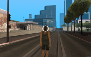

DxDrawCircle
From Nexus RP: Wiki
This function draws a number of 2D lines in order to achieve a circle shape on the screen - rendered for one frame. This should be used in conjunction with onClientRender in order to display continuously.
Syntax
Required Arguments
  An example of how dxDrawCircle function works in practice.
An example of how dxDrawCircle function works in practice.
- posX: An integer representing the absolute X position of the circle center, represented by pixels on the screen.
- posY: An integer representing the absolute Y position of the circle center, represented by pixels on the screen.
Optional Arguments
NOTE: When using optional arguments, you must supply all arguments before the one you wish to use. For more information on optional arguments, see Optional Arguments.
- radius: An integer representing the radius scale of the circle that is being drawn.
- width: An integer representing the width of the line that is being drawn.
- angleAmount: An integer representing the tightness of the circle. Lower amount makes it smoother, higher amount makes it more of a clock looking circle.
- startAngle: An integer representing the angle of the first point of the circle.
- stopAngle: An integer representing the angle of the last point of the circle.
- color: An integer of the hex color, produced using tocolor or 0xAARRGGBB (AA = alpha, RR = red, GG = green, BB = blue).
- postGUI: A bool representing whether the line should be drawn on top of or behind any ingame GUI (rendered by CEGUI).
Returns
Returns true if the creation of the 2D circle was successful, false otherwise.
Code
Click to collapse [-]
Clientfunction dxDrawCircle( posX, posY, radius, width, angleAmount, startAngle, stopAngle, color, postGUI ) if ( type( posX ) ~= "number" ) or ( type( posY ) ~= "number" ) then return false end local function clamp( val, lower, upper ) if ( lower > upper ) then lower, upper = upper, lower end return math.max( lower, math.min( upper, val ) ) end radius = type( radius ) == "number" and radius or 50 width = type( width ) == "number" and width or 5 angleAmount = type( angleAmount ) == "number" and angleAmount or 1 startAngle = clamp( type( startAngle ) == "number" and startAngle or 0, 0, 360 ) stopAngle = clamp( type( stopAngle ) == "number" and stopAngle or 360, 0, 360 ) color = color or tocolor( 255, 255, 255, 200 ) postGUI = type( postGUI ) == "boolean" and postGUI or false if ( stopAngle < startAngle ) then local tempAngle = stopAngle stopAngle = startAngle startAngle = tempAngle end for i = startAngle, stopAngle, angleAmount do local startX = math.cos( math.rad( i ) ) * ( radius - width ) local startY = math.sin( math.rad( i ) ) * ( radius - width ) local endX = math.cos( math.rad( i ) ) * ( radius + width ) local endY = math.sin( math.rad( i ) ) * ( radius + width ) dxDrawLine( startX + posX, startY + posY, endX + posX, endY + posY, color, width, postGUI ) end return true end
Author: Socialz
Examples
Click to collapse [-]
ClientThis example draws a progressing circle shape in the middle of the screen.
local screenWidth, screenHeight = guiGetScreenSize( ) local stopAngle = 0 addEventHandler( "onClientRender", root, function( ) if ( stopAngle < 360 ) then stopAngle = stopAngle + 5 else stopAngle = 0 end dxDrawCircle( screenWidth / 2, screenHeight / 2, nil, nil, nil, nil, stopAngle ) end )
Click to collapse [-]
ClientThis example draws the shape of a circle arc with an angle of 90°.
addEventHandler( "onClientRender", root, function( ) -- We're starting to draw the circle at 0° which means that the first point of the arc is ( 200+50 | 200 ) -- Therefore the last point is ( 200 | 200+50 ). > Our arc is the "lower right" quarter of the circle. dxDrawCircle( 200, 200, 50, 5, 1, 0, 90 ) end )
Example by: Michael89/Trevit
See Also
- attachEffect » This function allows you attach an effect to an element.
- bindControlKeys » This function allows you to bind each key bound to a control individually. Doing this bypasses a little NRP restriction.
- callClientFunction » This function allows you to call any client-side function from the server's side.
- callServerFunction » This function allows you to call any server-side function from the client's side.
- capitalize » This function capitalizes a given string.
- centerWindow » This function centers a CEGUI window element responsively in any resolution.
- Check » This function checks if its arguments are of the right type and calls the error-function if one is not.
- convertNumber » This function converts and formats large numbers.
- convertServerTickToTimeStamp » This function converts server ticks to a unix timestamp.
- convertTextToSpeech » This function converts the provided text to a speech in the provided language which players can hear.
- coroutine.resume » This function applies a fix for hidden coroutine error messages.
- dxDrawAnimWindow » This function draws an animated 2D window on the screen.
- dxDrawCircle » This function draws a number of 2D lines in order to achieve a circle shape on the screen.
- dxDrawEmptyRectangle » This function draws an empty 2D rectangle on the screen.
- dxDrawGifImage » This function simulates the effect of a GIF image by using image sprites in 2D.
- dxDrawImage3D » This function draws a 3D image in GTA world.
- dxDrawRectangle3D » This function draws a 3D rectangle in GTA world.
- dxGetFontSizeFromHeight » This function calculates the font size from given height.
- dxGetRealFontHeight » This function calculates the height of a font.
- findRotation » This function takes two points and returns the direction from point A to point B.
- FormatDate » This function formats a date on the basis of a format string and returns it.
- GenerateString » This function generates a random string with any characters.
- generateRandomASCIIString » This function returns a random string which uses ASCII characters.
- getAge » This function calculates the age of a given birthday.
- getAlivePlayers » This function returns a table of the alive players client-side.
- getAlivePlayersInTeam » This function returns a table of the alive players in a team.
- getBanFromName » This functions returns the ban of the given playername.
- getBoundControls » This function returns a table of control names that are bound to the specified key.
- getCurrentFPS » This function returns the frames per second at which GTA: SA is running.
- getCursorMoveOn » This function checks in which way the cursor is currently moving.
- getDistanceBetweenPointAndSegment2D » This function takes point coordinates and line (a segment) starting and ending coordinates. It returns the shortest distance between the point and the line.
- getElementSpeed » This function returns the specified element's speed in m/s, km/h or mph.
- getElementsInDimension » This function returns a table of elements that are in the specified dimension.
- getElementsWithinMarker » This function returns a table of elements that are within a marker's collision shape.
- getJetpackWeaponsEnabled » This function returns a table of enabled weapons usable on a jetpack.
- getKeyFromValueInTable » This function returns the key of the specified value in a table.
- getOffsetFromXYZ » This function allows you to take an entity and a position and calculate the relative offset between them accounting for rotations.
- getOnlineAdmins » This function returns a table of all logged-in administrators.
- getOnlineStaff » This function returns a string of all logged-in administrators separated by two whitespace characters.
- getPedMaxHealth » This function returns a pedestrians's maximum health by converting it from their maximum health stat.
- getPedMaxOxygenLevel » This function returns a ped's maximum oxygen level by converting it from their maximum underwater stamina stat.
- getPlayerFromNamePart » This function returns a player from partial name.
- getPlayerFromSerial » This function returns a player from their serial.
- getPlayerAcls » This function returns a table of all ACL groups on a player.
- getPlayersByData » This function returns a table of players that have the specified data name.
- getPlayersInPhotograph » This function returns a table of all players in photograph.
- getPointFromDistanceRotation » This function finds a point based on a starting point, direction and distance.
- getResourceSettings » This function returns a table of the resource settings.
- getResourceScripts » This function returns a table of the resource scripts.
- getRGColorFromPercentage »This function returns two integers representing red and green colors according to the specified percentage.
- getScreenRotationFromWorldPosition » This function returns a screen relative rotation to a world position.
- getTeamFromColor » This function returns a team element by the specified color.
- getTeamWithFewestPlayers » This function returns a team element with least players of all the specified teams.
- getTimestamp » This function returns the UNIX timestamp of a specified date and time.
- getValidVehicleModels » This function returns a table of all valid vehicle models.
- getVehicleRespawnPosition » This function allows you to get the respawn position of a vehicle.
- getXMLNodes » This function returns all children of a XML node.
- getGridListRowIndexFromText » This function returns the GridList row index from the specified text.
- guiComboBoxAdjustHeight » This function adjusts a CEGUI combobox element to have the correct height.
- guiGridListGetSelectedText » This function returns a string containing the inner text of a selected gridlist item.
- IfElse » This function returns one of two values based on a boolean expression.
- isElementInPhotograph » This function checks if an element is in the player's camera picture area.
- isElementInRange » This function allows you to check if an element's range to a main point is within the maximum range.
- isElementMoving» This function checks if an element is moving.
- isElementWithinAColShape» This function checks if an element is within a collision shape element.
- isLeapYear » This function returns a boolean representing if a given year is a leap year.
- isMouseInPosition » This function allows you to check whether the mouse cursor/pointer is within a rectangular position.
- isPedAiming» This function checks if a pedestrian is aiming their weapon.
- isPedDrivingVehicle » This function checks if a specified pedestrian is driving a vehicle.
- isPlayerInACL » This function checks if a player element is in an ACL group.
- isPlayerInTeam » This function checks if a player is in a specified team.
- isSoundFinished » This function checks if a sound element has finished.
- isVehicleEmpty » This function checks whether a vehicle is empty.
- isVehicleOccupied » This function checks if a specified vehicle is occupied.
- isVehicleOnRoof » This function checks whether vehicle is on roof.
- isPedAimingNearPed » This is similar to isPedAiming but uses a colshape to be more precise.
- isTextInGridList » This function checks if some text exist or not in the GridList.
- iterElements » This function returns a time-saving iterator for your for-loops.
- mathNumber » This function is a workaround for the client-side floating-point precision of 24-bits.
- math.percent » This function returns a percentage from two number values.
- math.round » Rounds a number whereas the number of decimals to keep and the method may be set.
- multi_check » This function checks one element to many, handy and clean.
- onVehicleWeaponFire » This code implements an event that is triggered when a player in a vehicle fires a vehicle's weapon.
- rangeToTable » This function converts a string range to a table containing number values.
- renameAclGroup » This function gives an existing ACL group a new name.
- RGBToHex » This function returns a string representing the color in hexadecimal.
- secondsToTimeDesc » This function converts a plain seconds-integer into a user-friendly time description.
- setAccountName » This function is used to change an existing account's name.
- setElementSpeed » This function allows you to set the speed of an element in kph or mph units.
- setTableProtected » This function protects a table and makes it read-only.
- setVehicleGravityPoint » This function sets a vehicle's gravity in the direction of a 3 dimensional coordinate with the strength specified.
- smoothMoveCamera » This function allows you to create a cinematic camera flight.
- string.count » This function counts the amount of occurences of a string in a string.
- string.explode » This function splits a string at a given separator pattern and returns a table with the pieces.
- switch » This function allows the value of a variable or expression to control the flow of program execution via a multiway branch.
- table.copy » This function copies a whole table and all the tables in that table.
- table.compare » This function checks whether two given tables are equal.
- table.empty » This function checks whether a table is empty.
- table.map » This function goes through a table and replaces every field with the return of the passed function, where the field's value is passed as first argument and optionally more arguments.
- table.merge » This function merges two or more tables together.
- table.random » This function retrieves a random value from a table.
- table.size » This function returns the absolute size of a table.
- table.removeValue » This function removes a specified value from a table.
- toHex » This function converts a decimal number to a hexadecimal number, as a fix to be used client-side.
- unbindControlKeys » This function allows you to unbind each key bound to a control individually. Use this function with bindControlKeys.
- var dump » This function outputs information about one or more variables using outputConsole.
- wavelengthToRGBA » This function converts a physical wavelength of light to a RGBA color.